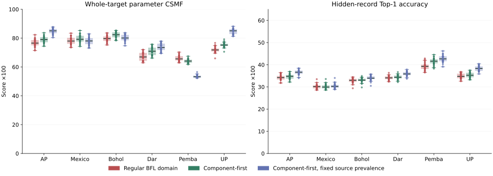
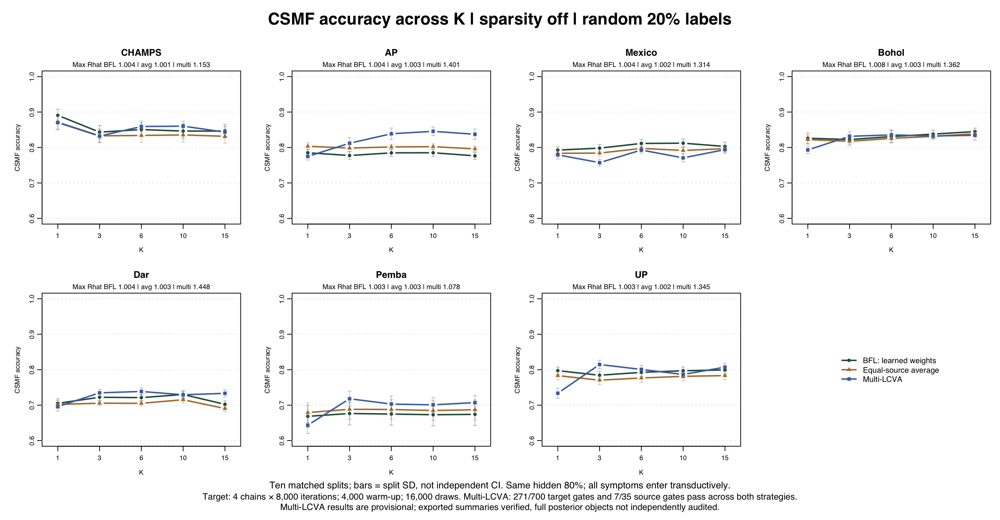
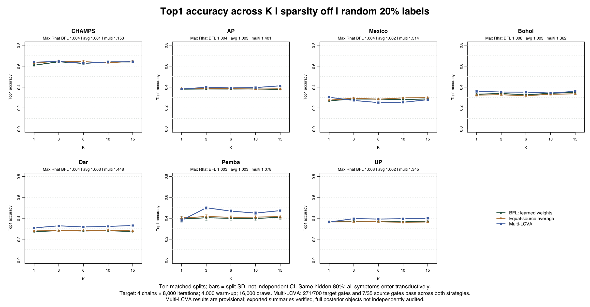
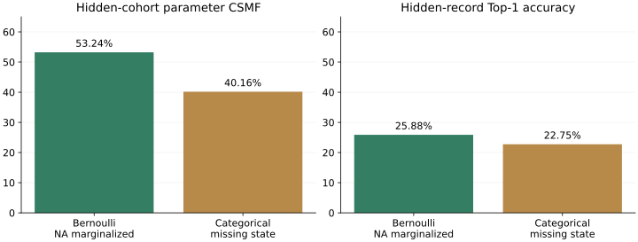

| Period / type | Parent / branches | Updated / iteration | Evidence |
|---|---|---|---|
| Nov 13–19, 2026 · Weekly results | BFL · borrowing, source experts, missingness, validation | Nov 19, 2026 · revision 2 · collection23:15–23:20PST | Owner contributions + collected aggregate files; source diagnostics remain separate |
| Method | Whole-target parameter CSMF | Hidden-record Top-1 |
|---|---|---|
| Regular BFL domain | 73.25% | 34.25% |
| Component-first | 75.17% | 34.83% |
| Component-first, fixed source prevalence | 75.82% | 36.32% |

This is the domain protocol, not source-only partial-label BFL. Paper no-shift masks include cause-coverage constraints. The whole-target CSMF here differs from hidden-cohort CSMF in the pilot below.



| Reference | What it means |
|---|---|
| 168 inputs | 165 symptoms plus Female, Male and Elder; verified AP paper baseline. |
| 165 inputs | Symptom-only variant; do not silently compare with168 as a pure method change. |
| 330 inputs | 165 values plus165 missingness flags; explicit experimental encoding only. |
| Paper splits | No shift, mild shift and extreme/severe. Severe has capped/uncapped variants. |
| Matched comparison | Match feature names/order, cohorts, revealed/evaluation IDs and score definitions—not merely20/80 or a seed. |